SAE Aero Design 2024 Aircraft
- AeroMIT's Micro Class aircraft for SAE Aero Design 2024, which placed World Rank 6
- Carries 74.4 fl oz of liquid payload at an empty weight of 3.5 lb, a payload fraction of 1.4
- Topology optimisation cut rib weight by 44.8%; a redesigned landing gear saved a further 21%
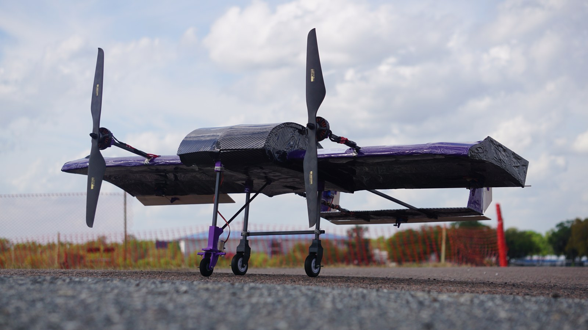
Overview
The Micro Class mission rewards liquid payload while penalising wingspan, empty weight and take-off distance. Our job was to carry as much water as possible out of a very short field, then unload it fast.
After weighing a bi-plane, a blended wing body and a monoplane against weighted figures of merit, the team went with a conventional monoplane (score 10.2 against 9.8 and 6.7). The electronics and payload sit in a pod blended into the wing, with a U-tail kept clear of the pod's wake and twin tractor motors mounted ahead of the wing on booms.
Specifications
| Configuration | Monoplane with integrated pod, U-tail, endplates |
|---|---|
| Wingspan | 47.24 in |
| Wing area / aspect ratio | 4.2 ft² / 3.72 |
| Empty weight | 3.5 lb |
| Payload | 74.4 fl oz of water, payload fraction 1.4 |
| Stall speed | 37.43 ft/s |
| Max rate of climb | 22.27 ft/s |
| Static margin | 11.89% |
| Propulsion | 2 × T-Motor MN5006 450KV, 17 × 5.8 props, 4S 1500 mAh |
Structures: my subsystem
I led the structures subsystem, which owned material selection, the internal airframe, the landing gear and the manufacturing of every structural part. The target was simple and unforgiving: carry the loads, and weigh as little as possible, because every ounce of empty weight came straight out of the flight score.
Material selection
Candidate materials went through three-point bending, torsion, impact and shear tests before anything was committed to the build.
- Balsa scored highest overall (13.8), ahead of carbon fibre sandwich (12.2) and aluminium (10.2).
- 8 × 8 mm square pultruded carbon tubes for the motor booms, to take the torsion from motor torque.
- 4 mm roll-wrapped carbon tubes for the wing spars: enough rigidity for very little weight.
- Carbon fibre reinforcement on the ribs, Monokote over the whole airframe, and a 1 mm balsa hatch following the pod's curve.
- PLA for the 3D-printed motor mounts, landing gear joints and control horns.
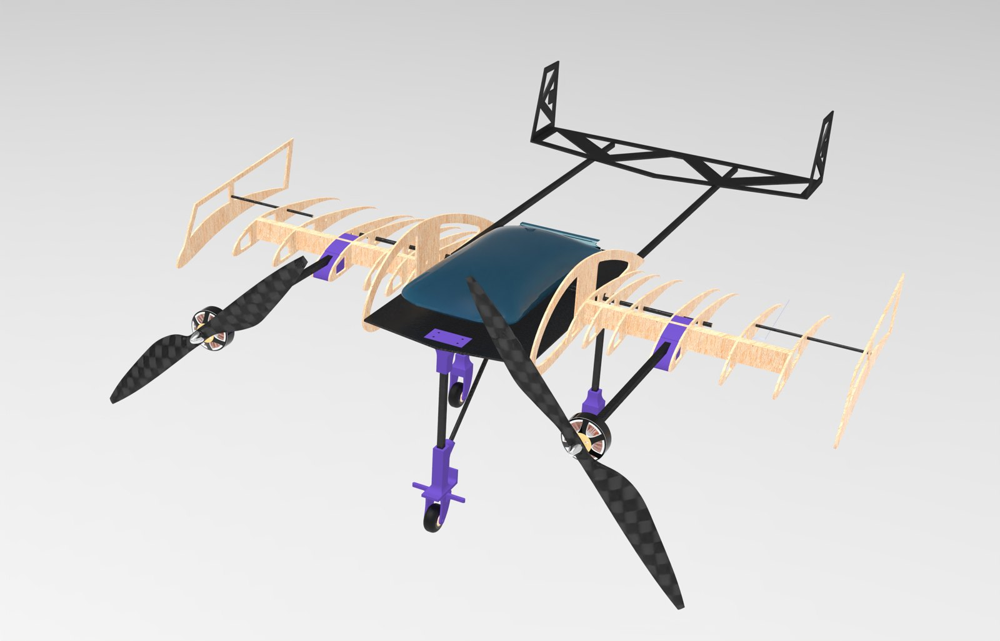
Topology optimisation
To cut empty weight without losing strength, the ribs were topology-optimised in ANSYS Static Structural under flight loads and landing impacts, to a convergence accuracy of 0.1%. The result was an organic, truss-like rib: 44.8% lighter, with a much better strength-to-weight ratio, at 0.18 lb and a calculated maximum stress of 7.15 ksi.
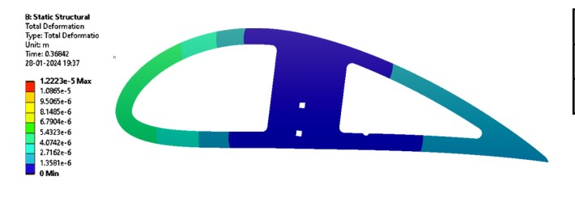
Wing deflection
Lifting line theory gave the lift distribution along the semi-span. A MATLAB script fitted the data and integrated it for shear force and bending moment, which set the rib spacing. The wing was then loaded in ANSYS with the pressure field from CFD and checked for deflection and stress at critical sections.
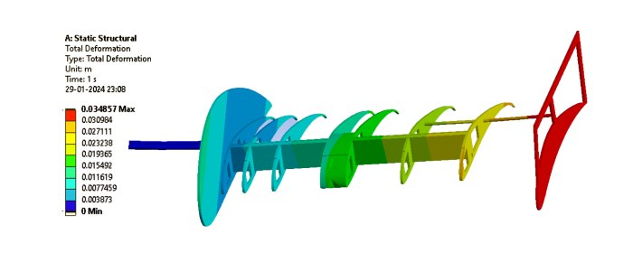
Landing gear
The previous year's nose gear had fractured on hard landings, so this one was designed around impact. Impact forces came from the impulse-momentum equation over a 0.3 s landing, with tolerance for pilot error and gusty conditions. A tricycle layout with a 30:70 nose-to-main load split was confirmed in ANSYS, and a servo-driven four-bar linkage steers the nose wheel.
The final iteration used 8 mm pultruded square spars bonded into custom 3D-printed joints, 21% lighter than the previous design.
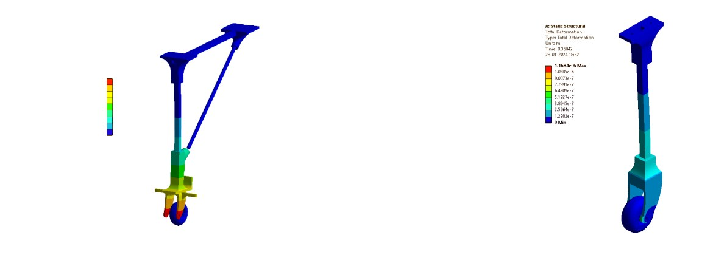
Manufacturing
Balsa parts were laser cut from CAM files for accuracy and repeatability. The carbon–balsa sandwich baseplate was compression laid up, the ribs were laminated by hand, and carbon tows reinforced the stabilisers against flutter. Custom supports held each rib at the right chord alignment during assembly, and every part was inspected to a ±0.1 in tolerance before the airframe was covered in Monokote.
The landing gear joints were printed on the 3D printer I built myself, then bonded to the carbon rods with epoxy.
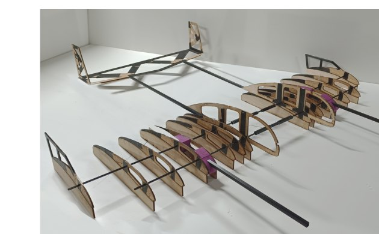
Aerodynamics and stability
Custom airfoils were interpolated across the span: a thicker cambered section in the pod for payload volume and glide ratio, and thinner high-lift sections outboard. CFD in ANSYS Fluent with a k-ω SST mesh was validated in a wind tunnel on a 1:2 half-wing model at Reynolds 410,000. Endplates added 12.4% less drag and 10.8% more lift. Flight testing was instrumented with a Pixhawk flight controller, and the telemetry was used to check the take-off and climb models.
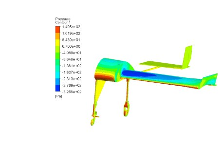
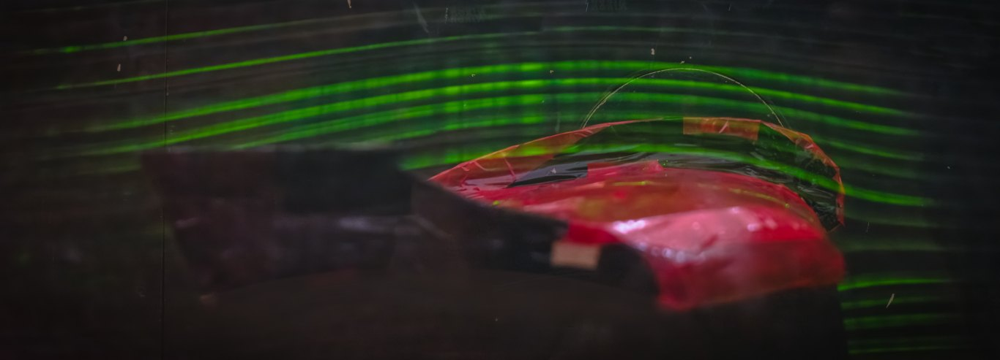
Result
AeroMIT finished World Rank 6 at SAE Aero Design 2024. The same season, the team placed 3rd at Vayurvya Rotorcraft at NITTE and 10th in phase 1 of ICUAS'24, organised by the University of Zagreb.
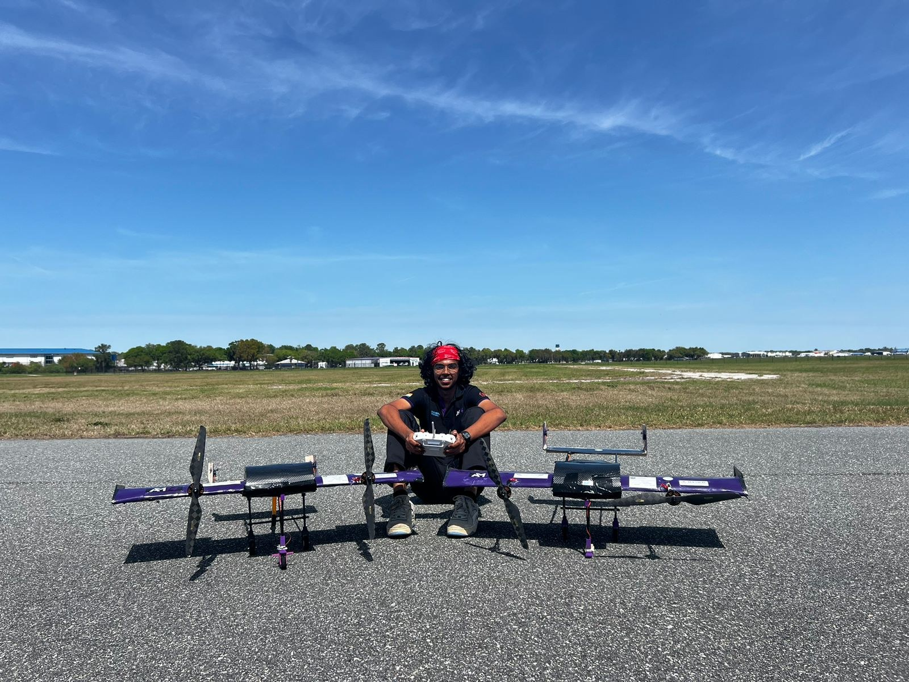
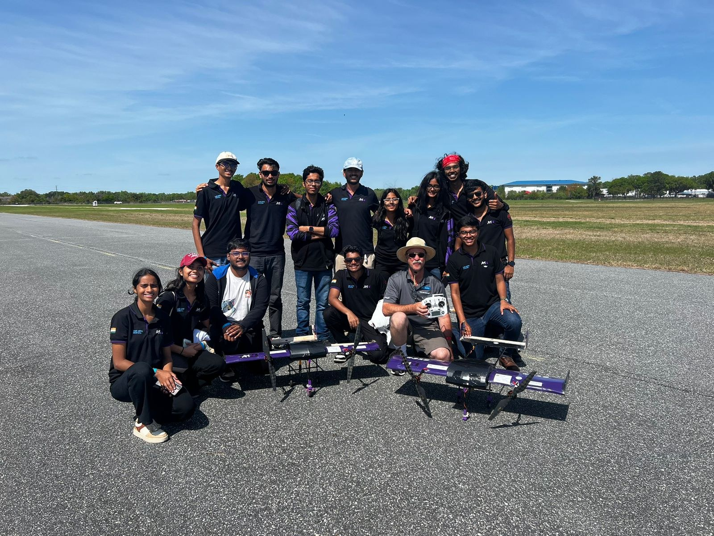
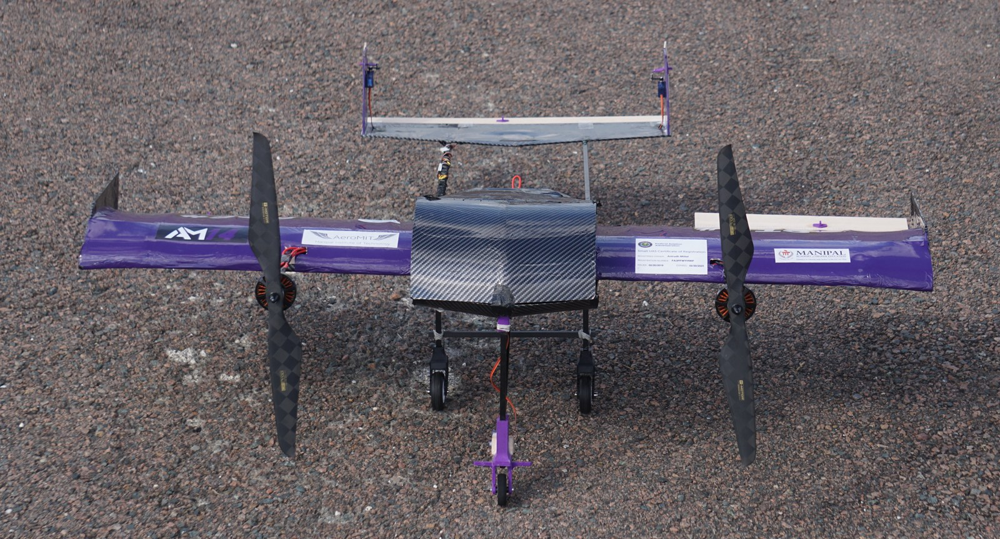